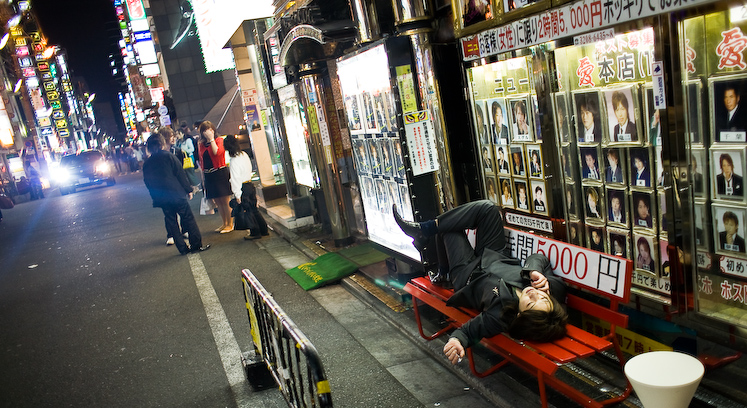
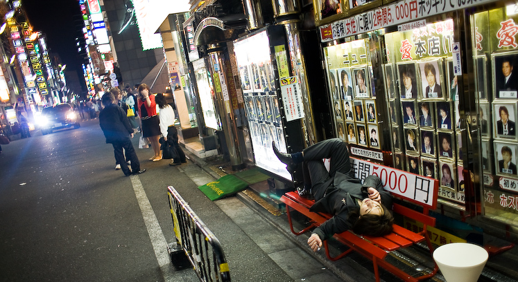

TOKYO REALTIME - Audio Guided Walking Tours


 



TOKYO REALTIME is a series of audio guided walking tours revealing new sides to Tokyo’s most interesting neighborhoods.
Each tour includes:
- a CD with mp3 audio
- an area map
- a booklet of area photography
TOKYO REALTIME tours interweave narration and interviews within a soundscape of location ambience. The tours deliver a seamless mix of adventure and cultural insight while navigating real-world spaces.
Simply transfer the audio program to any portable mp3 player, go to the starting point on the included map and press play.
Akihabara
Get an insider tour of Japan's pop culture mecca for anime, manga, maids and more...
TOKYO'S ELECTRIC TOWN, Akihabara is Japan's subculture hotspot for anime, manga, games and figures which attracts hardcore fans - and curious visitors - from all over the world. Internationally recognized experts on the area take you on an unforgettable, behind-the-scenes tour of the area. You'll visit all the must-see shops, gain historical knowledge, cultural insights and learn insider jargon like otagei, moé, itasha and more.
Photo Gallery (Click to Enlarge)


Praise for the Tour
Akihabara is one of the world's most densely intricate urban enclaves, and producer Max Hodges has assembled a crack team of uber-geeks from Japan and abroad to navigate its alleys and decode its mysteries. The audio guide is an illuminating portal into the neighborhood's colorful history and vibrant currents of contemporary pizzaz.
- Roland Kelts, author of Japanamerica
Patrick W. Galbraith reveals an Akihabara that even a long-term resident like me didn't fully understand.
-Jean Snow, Editor-in-Chief snow-mag.com
About the Narrator
Patrick W. Galbraith is the author of "The Otaku Encyclopedia" and is a Ph.D. candidate at the University of Tokyo where he researches Akihabara and Otaku culture. He is a frequent contributor to Metropolis, Otaku USA Magazine and Otaku2.com
Interviews with
Patrick Macias - Author of "Cruising the Anime City" and editor of "Otaku USA Magazine"
Morikawa Kaichiro - Professor at Meiji University & author of several books including "Learning from Akihabara"
Danny Choo - blogger and Tokyo Stormtrooper
Kobayashi Takaya - local ward councilman
Kristina Dryza - consumer trend researcher
Mei-chan - otaku and former little sister at a sister café
Music by
Pa letee of @HomeCafé - Happy Happy Morning
Cutie Pai - Tokyo Refrain
Shane Berry - Canned Oden
Damn Dangerous - Nine to Five
and others...
Kabukicho
Take a stroll through Japan’s most imaginative entertainment district
JUST A FEW MINUTES FROM SHINJUKU STATION, the Kabukicho district pumps the same energy, diversity and excitement into adult entertainment as the Shinjuku area it inhabits injects into city life. You’ll dive right into the hyper-energetic mix of bright lights, boisterous crowds, less-dressed girls, loud touts and discretely guarded doors.
Photo Gallery (Click to Enlarge)


Praise for the Tour
Max Hodges strips Kabukicho bare in this raw, honest, and captivating tour.
- Playboy.com
Brace yourself for an hour in Hodges' company...on a tour to the heart of Kabukicho.
- Justin McCurry, Guardian.co.uk
About the Tour
AS YOU WEAVE THROUGH the streets of countless bars, strip joints, love hotels, and eateries, you’ll learn about the area’s colorful personalities and history, and get insights into the real action behind those closed doors. You’ll also get introduced to great places for a drink, a bite to eat, and to soak in the local ambience at your leisure.
About the Narrator
Max Hodges is a Tokyo-based photographer and producer. He frequently guides visiting journalists through Kabukicho. Max operates White Rabbit Press, a Tokyo-based publisher of Japanese language and travel products.
Interviews with
Lee Xiao Mu - Kabukicho guide & writer
Hiroshi - Kabukicho tout
Naito Chin - Golden Gai bar owner
Jim O’Connell - Photographer & Golden Gai regular
Osada Steve - Japanese rope bondage artist
Music by
cEvin Key - download
Mark Spybey - dead voices on air
Steven Schultz - bouninjoutai
Xavier Guiter - Xerak
and others...
Errata
Click here for changes on the ground which may affect this tour.More...
ABOUT WHITE RABBIT PRESS
With customers in over 80 countries, Tokyo-based White Rabbit Press is widely recognized for their outstanding Japanese Kanji Flashcards. With the launch of the TOKYO REALTIME audio tour series, White Rabbit Press continues to receive praise for making Japanese language and culture more accessible to the world.
Join our Mailing List
Receive infrequent Tokyo Realtime updates by email. We'll never share your email address, period.